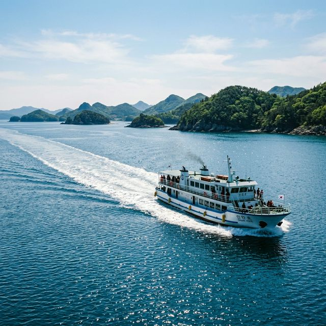

안녕하세요! 봄꽃 하면 벚꽃을 먼저 떠올리시겠지만, 전남 신안에는 그보다 더 강렬한 노란색의 유혹이 기다리고 있습니다. 바로 선도 수선화 축제인데요. 수선화 여인이라 불리는 주민 한 분의 정성스러운 가꿈에서 시작된 이 축제는 이제 섬 전체를 하나의 거대한 정원으로 바꾸어 놓았습니다.
육지와 연결되지 않은 섬으로 떠나는 여행이라 조금 번거로울 수도 있지만, 푸른 바다를 건너 만나는 끝없는 수선화 들판을 마주하는 순간 그 수고로움은 깨끗이 잊히게 됩니다. 2026년 축제 일정부터 배 타는 곳, 그리고 가장 중요한 입장료 50% 할인 받는 법까지 꼼꼼하게 정리해 드립니다.
신안 선도 — 넘실거리는 푸른 바다와 대조를 이루는 황금빛 수선화의 향연
올해 축제는 수선화가 가장 만개하는 4월 초부터 열흘간 진행됩니다. 작년보다 관람객 편의 시설이 확충되어 더욱 쾌적한 여행이 가능해졌습니다.
선도는 섬 모양이 매을 닮았다고 해서 붙여진 이름입니다. 축제 기간 동안 섬 곳곳을 돌며 스탬프를 찍거나, 수선화 차를 마시는 등 소박하면서도 따뜻한 섬마을의 정을 느낄 수 있는 프로그램들이 준비되어 있습니다.
가장 많이 물어보시는 부분입니다. 선도는 차를 타고 직접 갈 수 없는 섬이기에 반드시 배를 이용해야 합니다. 출발지는 크게 두 곳입니다.
목포 시내에서 접근성이 가장 좋습니다. 가룡선착장에서 선도까지는 배로 약 50분 정도 소요됩니다. 축제 기간에는 관광객을 위해 선박 운항 횟수가 대폭 늘어나지만, 여전히 주말에는 대기 시간이 발생할 수 있으니 오전 9시 이전의 첫 배를 타시는 것을 강력 추천합니다.
광주나 위쪽 지역에서 내려오시는 분들이 이용하기 좋습니다. 운항 거리는 짧지만 배편이 가룡선착장에 비해 적을 수 있으므로 반드시 사전에 시간표를 확인해야 합니다.

선착장을 떠나 선도로 향하는 길 — 시원한 바닷바람과 함께 시작되는 설레는 섬 여행
신안군은 '컬러 마케팅'으로 아주 유명하죠? 퍼플섬에는 보라색 옷을, 수선화 섬에는 노란색이 그 주인공입니다.
| 구분 | 입장료 | 비고 |
|---|---|---|
| 일반 성인 | 6,000원 | 일부는 1004섬 상품권으로 환부 |
| 노란색 옷/소품 착용자 | 3,000원 (50% 할인) | 상의, 하의, 모자, 가방 등 인정 |
| 어린이·청소년·군인 | 무료 | 학생증/신분증 지참 필수 |
꼭 옷이 아니더라도 노란색 스카프나 노란색 백팩, 심지어 노란색 일회용 마스크를 착용해도 할인이 인정되는 경우가 많습니다. (현장 검표원에 따라 기준이 다를 수 있으니 확실하게 위아래 하나는 노란색으로 입고 가시는 게 좋습니다!) 할인받은 입장료 중 일부는 신안 지역 상품권으로 돌려받아 섬 내에서 먹거리를 사 먹을 때 현금처럼 쓸 수 있으니 사실상 혜택이 매우 큽니다.
노란색 물결 — 수선화와 드레스코드를 맞춘 관광객들이 축제 분위기를 더욱 밝게 만듭니다.
축제의 시초가 된 수선화 여인의 집 마당은 여전히 정성 가득한 수능화를 볼 수 있는 핵심 장소입니다. 소박한 돌담과 노란 꽃이 어우러진 풍경은 사진 작가들이 가장 선호하는 구도이기도 합니다.
선도는 해안선을 따라 수선화 밭이 펼쳐져 있어, '바다+섬+꽃' 이 세 가지를 한 앵글에 담을 수 있습니다. 길이 험하지 않아 남녀노소 누구나 편하게 걸을 수 있습니다.
상품권 환급 제도를 활용해 섬 주민들이 직접 만든 파전, 잔치국수 등을 즐겨보세요. 특히 신안의 명물인 김이나 낙지 요리를 곁들이면 최고의 여행이 됩니다.
📝 요약: 노란색 옷 입고 선도로 떠나는 낭만 섬 여행
4월 3일부터 12일까지 열리는 신안 선도 수선화 축제. 사전 예약 없이도 입장이 가능하며, 압해읍 가룡선착장에서 배를 타고 들어가는 선상 풍경도 놓칠 수 없는 재미입니다. 올봄, 뻔한 벚꽃
놀이 대신 섬 전체가 황금빛으로 일렁이는 선도에서 인생 사진을 남겨보는 건 어떨까요?
출처 및 참고: 신안군청 공식 관광 누리집 (shinan.go.kr), 가보고 싶은 섬(여객선 예약 사이트), 현지 방문객 후기 데이터
※ 2026년 축제 일정은 기상 상황에 따라 변동될 수 있습니다. 배 시간표는 평일과 주말이 다르므로 반드시 사전 확인이 필수입니다.
👉 함께 읽으면 좋은 글: 창경궁 벚꽃 야간개장 — 예약 없이 즐기는 서울 밤 벚꽃 산책
👉 함께 읽으면 좋은 글: 광양 매화 그 이후: 섬진강 벚꽃 드라이브 실시간 상황
#신안여행 #선도수선화축제 #수선화축제2026 #신안가볼만한곳 #가룡선착장배시간표 #섬수선화축제 #노란색할인 #신안가볼만한곳 #황금빛수선화 #1004섬신안 #전라도봄꽃축제 #섬여행추천 #수선화여인 #봄나들이코스